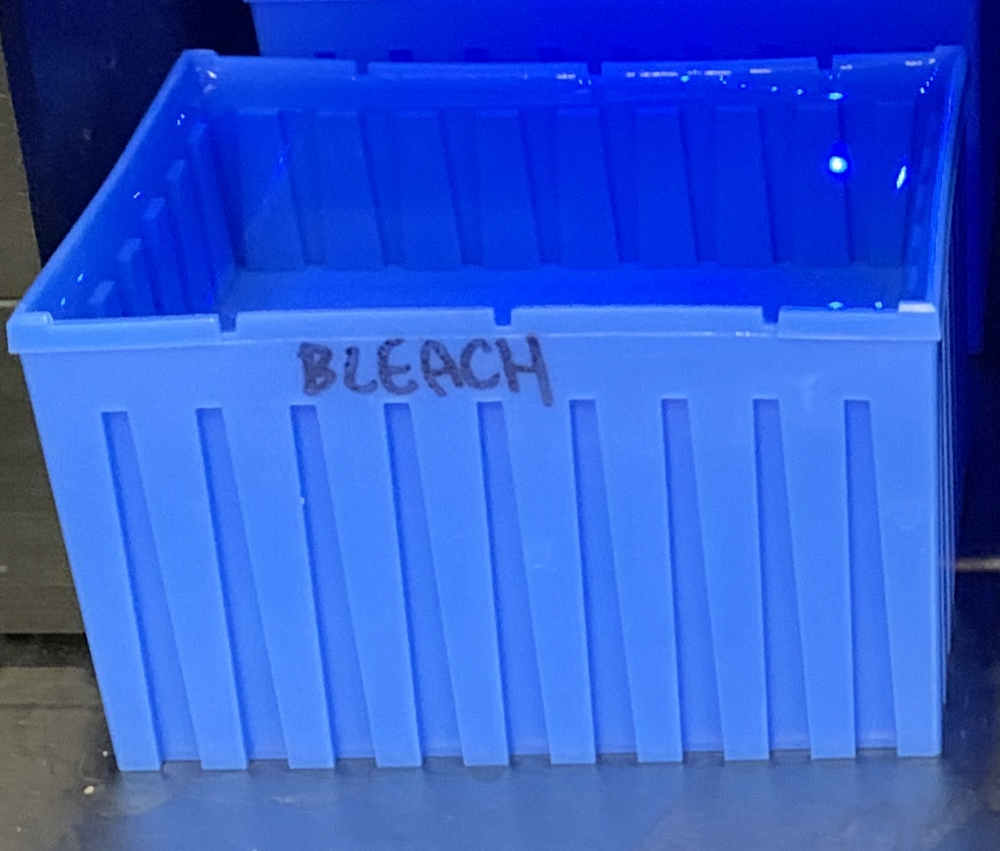
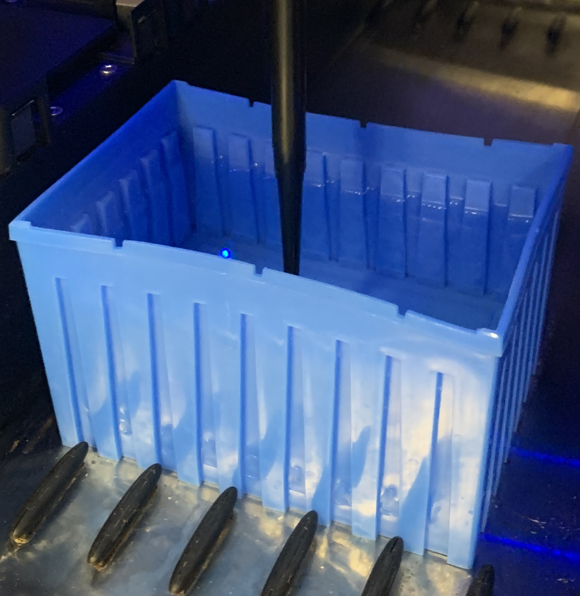
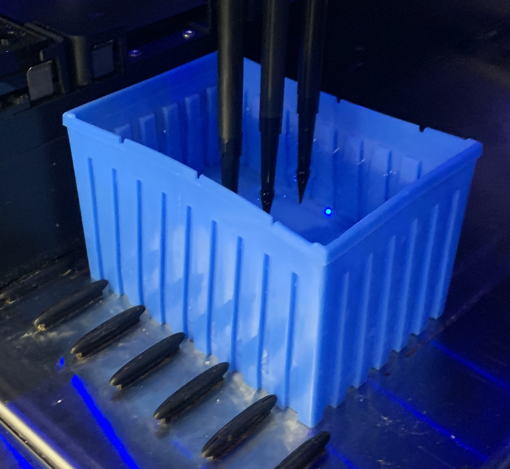
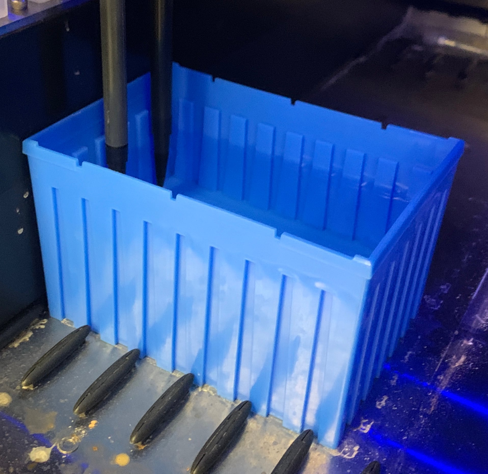
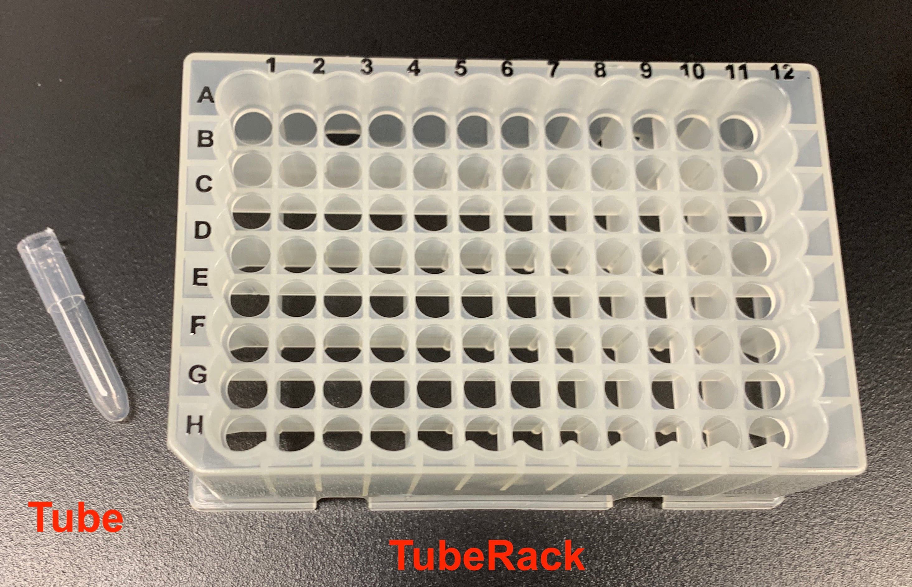
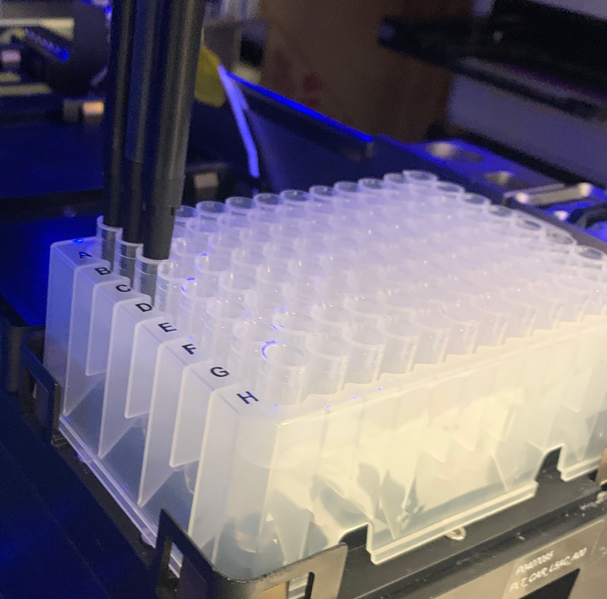

Defining custom resources#
This document describes how to define custom resources in PyLabRobot. We will build a custom liquid container (called “Blue Bucket”) and a custom plate, consisting of tubes stuck on top of a plate.
Defining a custom liquid container#

Defining create a custom liquid container, like the blue bucket above, is as easy as instantiating a pylabrobot.resources.Resource object:
from pylabrobot.resources import Coordinate, Resource
blue_bucket = Resource(
name='Blue Bucket',
size_x=123, # in mm
size_y=86,
size_z=75,
)
If you want to instantiate many resources sharing the same properties, you can create a subclass of pylabrobot.resources.Resource and override the class attributes:
class BlueBucket(Resource):
def __init__(self, name: str):
super().__init__(
name=name,
size_x=123,
size_y=86,
size_z=75,
)
This will allow you to creates instances like so:
blue_bucket = BlueBucket(name="my blue bucket")
Because a blue bucket cannot have children, we override the pylabrobot.resources.Resource.assign_child_resource() method to raise an exception:
class BlueBucket(Resource):
...
def assign_child_resource(self, child_resource: Resource, location: Coordinate) -> None:
raise RuntimeError("BlueBuckets cannot have children")
Aspirating from the custom resource#
To help PLR track liquids in a container, all liquid-containing resources are subclasses of Container. Let’s modify the class definition of BlueBucket to be a subclass of Container:
class BlueBucket(Container):
The default behavior when aspirating from a resource is to aspirate from the bottom center:
lh.aspirate(blue_bucket, vols=10)

With multiple channels, the channels will be spread evenly across the bottom of the resource:
await lh.aspirate(blue_bucket, vols=[10, 10, 10], use_channels=[0, 1, 2])

What happens when aspirating resources is that PLR creates a list of offsets that equally space the channels across the y-axis in the middle of the resource. These offsets are computed using pylabrobot.resources.Resource.get_2d_center_offsets(). We can use this list and modify it to aspirate from a different location. In the example below, we will aspirate 10 mm from the left edge of the resource:
offsets = blue_bucket.get_2d_center_offsets(n=2) # n=2, because we are using 2 channels
offsets = [Coordinate(x=10, y=c.y, z=c.z) for c in offsets] # set x coordinate of offsets to 10 mm
await lh.aspirate(blue_bucket, vols=[10, 10], offsets=offsets) # pass the offsets to the aspirate

Serializing data#
Resources in PyLabRobot should be able to serialize and deserialize themselves, to allow them to be saved to disk and transmitted over a network.
On a high level, the serialize method creates a dictionary containing all data necessary to reconstruct a resource. This dictionary is passed to a resource’s initializer as kwargs, meaning keys in the dictionary must correspond to initializer arguments.
The default Resource serializer encodes information for all resource properties, including the size_x, size_y and size_z attributes. Since we have these fixed for the BlueBucket class, we only have to serialize the name (the rest of the data is inferred by the type). So let’s override the serialize method:
class BlueBucket(Resource):
...
def serialize(self) -> dict:
return {
"name": self.name,
"type": self.__class__.__name__,
}
Defining a custom plate#

The resource pictured above is a custom plate, consisting of tubes in a rack.
To define the custom “tube plate”, we will create a subclass of pylabrobot.resources.itemized_resource.ItemizedResource. This class handles item indexing (think plate["A1"] and plate.get_item(0)).
pylabrobot.resources.itemized_resource.ItemizedResource is a generic class that expects another class, of which the child resources will be instances. In this case, that class will be a custom Tube class. Let’s define that first:
class Tube(Container):
def __init__(self, name: str):
super().__init__(
name=name,
size_x=9,
size_y=9,
size_z=45,
)
Next, let’s define the custom plate. The Tube class is passed as a type argument to the ItemizedResource class with [Tube]:
from pylabrobot.resources import ItemizedResource, create_equally_spaced_2d
class TubePlate(ItemizedResource[Tube]):
def __init__(self, name: str):
super().__init__(
name=name,
size_x=127.0,
size_y=86.0,
size_z=45.0,
items=create_equally_spaced_2d(Tube,
num_items_x=12,
num_items_y=8,
dx=9.5,
dy=7.0,
dz=1.0,
item_dx=9.0,
item_dy=9.0,
)
)
The pylabrobot.resources.create_equally_spaced_2d() function creates a list of items, equally spaced in a grid.
This resource is automatically compatible with the rest of PyLabRobot. For example, we can aspirate from the plate:
tube_plate = TubePlate(name="tube_plate")
lh.deck.assign_child_resource(tube_plate, location=location)
lh.aspirate(tube_plate["A1":"C1"], vols=10)
lh.dispense(tube_plate["A2":"C2"], vols=10)
